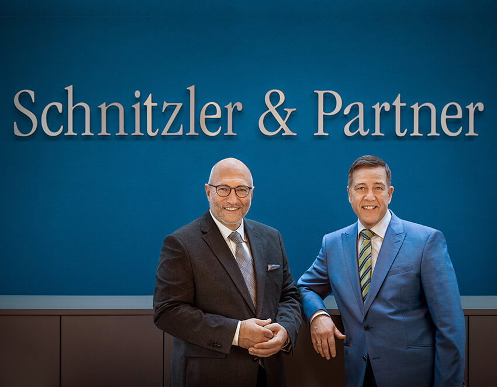
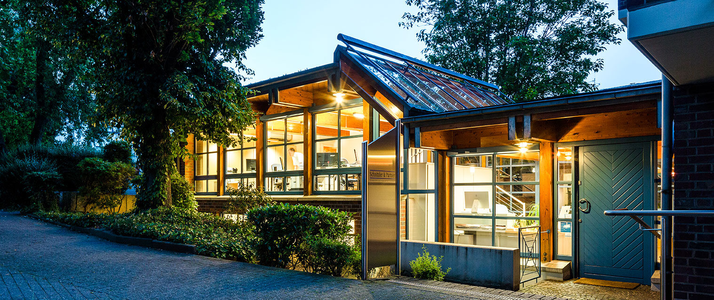

Steuerberatungsgesellschaft in Mönchengladbach
Bei uns stehen Sie im Mittelpunkt.
Seit mehr als 50 Jahren gehobene steuerliche und betriebswirtschaftliche Beratung und Begleitung von Unternehmen und Privatpersonen.
Herzlich willkommen auf unserer Internetseite der Steuerberatungsgesellschaft Schnitzler & Partner.
Sie, das ist nicht nur ein Wort. Es ist für uns eine Verpflichtung. Bei Schnitzler & Partner stehen Sie im Mittelpunkt. Die Beziehung zu unseren Mandanten bildet das Fundament und ist zugleich die Zukunft unserer Kanzlei. Deshalb legen wir großen Wert darauf, Ihnen zuzuhören und Sie bei allen unternehmerischen und steuerlichen Fragen zu beraten.
Sie - Wir - Lösungen.
Drei Worte, die zeigen, wie wir arbeiten. Sie führen zu den drei Fragen, mit denen die meisten zu uns kommen.
Über uns.
Schnitzler & Partner ist eine Steuerberatungsgesellschaft mit Sitz in Mönchengladbach, die sich seit mehr als 50 Jahren auf die gehobene steuerliche und betriebswirtschaftliche Beratung und Begleitung von Unternehmen und Privatpersonen spezialisiert hat. Die Kanzlei wird von den Partnern Andreas Bartkowski und Frank Kirsten geführt.
Schnitzler & Partner legt, neben der gestaltenden Steuerberatung, größten Wert auf die umfassende Betreuung bei allen übrigen relevanten fiskalischen und betriebswirtschaftlichen Fragestellungen, von der Rechtsformwahl über die Gestaltung von Gesellschaftsverträgen, Unterbeteiligungen und stillen Beteiligungen und Unternehmensfinanzierungen und Bankgesprächen bis hin zur Sanierungs- und Insolvenzberatung.
Ebenso treten die Berater, immer unterstützt vom rund 35-köpfigen Team, unter anderem bei der Nachfolgeberatung, der Vorsorgeplanung, Unternehmenstransaktionen und bei Investitionsentscheidungen auf Seiten von Unternehmen und Unternehmern auf. Die Kanzlei zählt zu den 20 größten am Niederrhein und berät Mandanten bis in den gehobenen Mittelstand hinauf auch bei grenzüberschreitenden Themen.
Wofür Sie uns brauchen.
Unsere Stärke liegt in der kreativen Entwicklung von Lösungsstrategien in allen wirtschaftlichen und steuerlichen Sachverhalten.
Unternehmen
Von Unternehmenskäufen und Umstrukturierungen bis zu Finanzierung und Bankgesprächen.
Mehr erfahrenPrivatpersonen
Steuerdeklarationen, Schenkungen, Testamente, Immobilien und Vorsorge.
Mehr erfahrenSanierung und Insolvenz
Krisen rechtzeitig erkennen und die beste Lösung finden.
Mehr erfahrenNachfolge
Übergänge steuerlich, wirtschaftlich und strategisch absichern.
Mehr erfahren
Partner und Team
Andreas Bartkowski, Frank Kirsten und ein Team mit rund 35 Köpfen.
KennenlernenArbeitsprozess mit DATEV Unternehmen online.
Mit uns ganz einfach.
Aktuelle Informationen ...
... zum Steuerrecht und rund um die Kanzlei finden Sie in unserer neuen Mandantenzeitung. Die jeweils aktuelle Ausgabe können Sie hier herunterladen. Die nächste Ausgabe erscheint im Frühjahr 2026.
Aus dem Steuerrecht.
53 Beiträge seit 2018. Hier die sechs neuesten.
Gewerbesteuer und ausländische Quellensteuer: BFH muss über Anrechnung entscheiden
Ausländische Beteiligungen können bei deutschen Kapitalgesellschaften zu einer besonderen steuerlichen Belastung führen, wenn auf Dividenden im Quellenstaat Steuer einbehalten wird und die Ausschüttung zugleich der deutschen Gewerbesteuer unterliegt. Das Gewerbesteuergesetz enthält bislang keine ausdrückliche Vorschrift zur Anrechnung ausländischer Quellensteuer. Das Finanzgericht Berlin-Brandenburg hat eine solche Anrechnung dennoch zugelassen. Nun muss der Bundesfinanzhof entscheiden.
Weiterlesen 17September 2026Steuern sparen bei Kindern in auswärtiger Berufsausbildung: Der Ausbildungsfreibetrag nach § 33a Abs. 2 EStG rechtssicher genutzt
Wenn volljährige Kinder für Studium oder Ausbildung einen eigenen Haushalt am Ausbildungsort führen, lässt sich der entstehende Mehraufwand steuerlich pauschal abfedern. Der Ausbildungsfreibetrag nach § 33a Abs. 2 EStG eröffnet Eltern einen festen Abzugsbetrag, der nicht an tatsächliche Zahlungen geknüpft ist. Entscheidend bleibt jedoch, dass Volljährigkeit, Ausbildungsstatus und auswärtige Unterbringung eindeutig nachgewiesen und zeitlich korrekt zugeordnet werden.
Weiterlesen 17September 2026Photovoltaik 2026: Förderlandschaft, Steuererleichterungen und Umsetzungssicherheit für Eigentümer
Eine Photovoltaikanlage rechnet sich häufig nicht allein über den Stromertrag, sondern über die Kombination aus Steuererleichterungen, verlässlicher EEG-Vergütung und tragfähiger Finanzierung. Der Förderzugang hängt dabei an formalen Voraussetzungen, Fristen und einer korrekten technischen Einordnung der Anlage. Wer die Maßnahmen frühzeitig strukturiert und dokumentiert, reduziert Umsetzungsrisiken und sichert die wirtschaftliche Kalkulation.
Weiterlesen 10Juni 2026Steuerfreie Sachbezüge als Alternative zur Gehaltserhöhung: Nettolohnoptimierung mit rechtssicherer Umsetzung
Sachbezüge verlagern Vergütung in Bereiche, die das Steuer- und Sozialversicherungsrecht gezielt begünstigt. Für Mitarbeitende entsteht ein spürbarer Nettovorteil, während sich der finanzielle Gesamtaufwand des Arbeitgebers häufig effizienter steuern lässt. Die Entlastungswirkung tritt jedoch nur ein, wenn Leistungsinhalt, Abrechnung und Dokumentation die formalen Voraussetzungen exakt erfüllen.
Weiterlesen 10Juni 2026Betriebsübertragungen in vorweggenommener Erbfolge: Steuerfallen und Gestaltungsoptionen
Die Übertragung eines Betriebs auf Angehörige zu Lebzeiten verbindet familiäre Nachfolgeziele mit komplexen steuerlichen Qualifikationsfragen. Schenkungsteuerliche Überlegungen greifen dabei regelmäßig zu kurz, weil die ertragsteuerlichen Folgen über Buchwertfortführung, Entnahmen, Sonderausgabenabzug und spätere Korrekturmechanismen entscheiden. Maßgeblich ist eine Umsetzung, die den zivilrechtlichen Vertrag, die wirtschaftliche Durchführung und die lohnende Dokumentation in Deckung bringt.
Weiterlesen 20März 2026Niedrig verzinste Darlehen im Familienkreis: Wann der Fiskus mitverdient
Familiäre Hilfe in Form eines günstig verzinsten oder zinslosen Darlehens ist häufig gut gemeint und praktikabel, etwa zur Hausfinanzierung oder Unternehmensgründung. Doch steuerlich kann der vermeintlich kostenfreie Vorteil schnell zur Falle werden: Wenn der Zinssatz deutlich unter dem marktüblichen Niveau liegt, erkennt das Finanzamt darin eine freigebige Zuwendung, was Schenkungsteuer auslösen kann. Dabei bildet die Differenz zwischen dem vereinbarten und dem tatsächlich marktüblichen Zinssatz die steuerliche Bemessungsgrundlage - und nicht unbedingt der gesetzlich vorgesehene Zinssatz von 5,5 Prozent. Mandanten sollten frühzeitig steuerlich beraten und die Verträge sorgfältig gestalten und dokumentieren.
WeiterlesenGefragt in Fachpresse und Zeitung.
28 Beiträge und Interviews, vom DATEV-Magazin bis zur Rheinischen Post.
Zwei Partner, ein Motto.
Die Kanzlei wird von den Partnern Andreas Bartkowski und Frank Kirsten geführt.


Konstantinstraße 58, Hof 3.
- Adresse
- Konstantinstraße 58/Hof 3
41238 Mönchengladbach - Telefon
- +49 (0)2166 9232-0
- Telefax
- +49 (0)2166 2865
- kanzlei@schnitzler-partner.de
- Mo bis Do
- 8.00 bis 16.00 Uhr
- Freitag
- 8.00 bis 12.30 Uhr